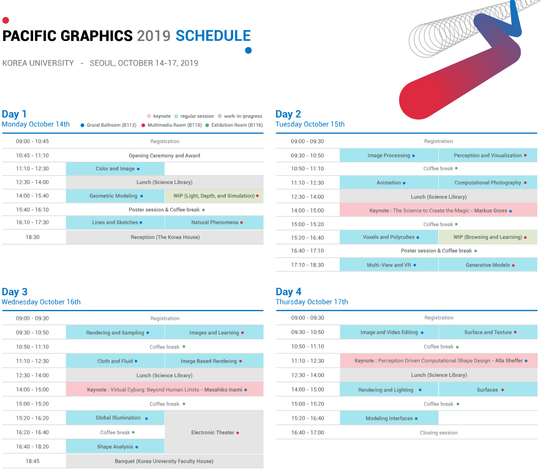
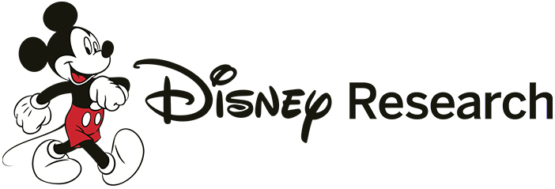
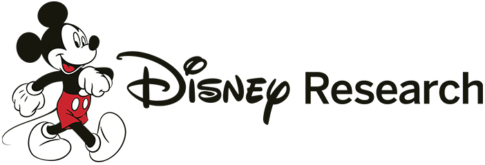

The 27th International Conference on Computer Graphics and Applications (Pacific Graphics 2019) was held at Korea University, Seoul, Korea, on October 14-17, 2019. Pacific Graphics is a flagship conference of the Asia Graphics Association. Pacific Graphics provides a premium forum for researchers, developers, and practitioners in the Pacific Rim and around the world to present and discuss new problems, solutions, and technologies in computer graphics and related areas.
This year Pacific Graphics received 222 submissions, which were reviewed by a Program Committee of 108 international experts and 154 external reviewers. Each submission underwent a rigorous review process. The Program Co-Chairs assigned each paper to a primary reviewer and a secondary reviewer selected from the Program Committee. The primary invited external reviewers so that each paper received at least three reviews. The decision of the first review cycle was made after the authors’ rebuttal and extensive discussions among the reviewers. Each of the accepted full papers underwent a second review cycle to ensure that the necessary revisions indicated in the reviews were carried out.
Out of 222 submissions, 74 full papers (acceptance rate: 33.3%) and 9 short papers were selected for oral presentation at the conference. 69 of the full papers are published in the special issue of Computer Graphics Forum and 5 of them will be published in the regular issue of Computer Graphics Forum after major revision. All the accepted full and short papers are published electronically through the EG Digital Library and presented in a two-track format at the conference. The conference program also includes presentations of four recent articles from regular issues of IEEE Transactions on Visualization and Computer Graphics and another four articles from regular issues of Computer Graphics Forum. They are presented together with regular papers. The conference also features three keynote speeches by Markus Gross, Alla Sheffer, and Masahiko Inami.
The work-in-progress and poster sessions are an integral part of the conference program, which provides an opportunity for authors to display late-breaking technical achievements that are not yet ready for publication or added on previous publication. While conference attendees receive the abstracts and supplemental material for the work-in-progress and poster program, this material does not appear in any archival libraries since work-in-progress and posters are not formal publications.
We wish to thank the members of the international program committee and the external reviewers for doing thorough reviews despite short review and discussion periods. We are also very grateful to Stefanie Behnke for her help with the submission and review management system, Michael Wimmer for providing the paper sorting script, and Hwangpil Park for his help with conference scheduling and administration. Finally, we would like to thank the authors for their support of this venue and congratulate them for the high quality of the papers compiled into the proceedings.
Conference Chairs
Korea University
Carol O'Sullivan,
Trinity College Dublin
Michiel van de Panne,
University of British Columbia
Program chairs
Seoul National University
Christian Theobalt,
Max Planck Institute for Informatics
Gordon Wetzstein,
Stanford University
Timeline
For Authors
Paper Submission
Original unpublished papers are invited in all areas of computer graphics and its applications. The topics include (but are not limited to) modeling, rendering, animation, and imaging, as well as visualization, human-computer interaction, and graphics systems and applications. Any interesting new ideas related to computer graphics and applications are welcome.
Paper Publication
The conference proceedings of Pacific Graphics 2019 will be published as an issue of the Eurographics journal, Computer Graphics Forum (CGF), in print and online. Regular (full) papers will be presented in oral sessions and appear in the journal issue. A few submissions with strong potentials but not accepted as regular papers will be recommended for a second review cycle of CGF after major revisions. Short papers will be accepted but will be published electronically through the EG digital library. Extended versions of selected, high-quality, short papers will be invited to ACM Computers in Entertainment.
Submission System here.
LaTeX-Template is available here.
Work-in-Progress Papers and Posters
For the first time in Pacific Graphics, the Pacific Graphics 2019 welcomes work-in-progress and poster submissions from all areas of computer graphics, such as modeling,
rendering, animation, imaging, visualization, human-computer interaction, and graphics systems. Authors are encouraged to submit work-in-progress and practical applications
to demonstrate a novel and applicable ideas in all aspects of computer graphics. Authors of accepted work-in-progress papers will have an approximately fifteen-minute oral
presentation of their work at the conference. Accepted posters will be displayed during the conference and also will form the focus of a poster session in conjunction with one
of the social events. Authors of accepted posters are expected to present their posters during the poster session to discuss their work and answer questions. More details will
follow when the conference program is finalized.
Submission details
Authors can make an electronic submission through the Submission and Review Management (https://srmv2.eg.org/COMFy/Conference/PG_2019P). Authors are asked to
indicate their preferences whether the submission needs to be considered as a work-in-progress paper or a poster. When both options are selected, the work will first be
reviewed as a work-in-progress paper, and then evaluated as a poster submission. Work-in-progress papers and posters submission should strive not to exceed two pages
and must be formatted according to the Pacific Graphics Author’s guideline. Authors may accompany a preliminary version of the actual poster if they choose to be considered
as a poster submission. The review process will be double-blind. Please remove all personal data (e.g., names, affiliation, etc.) from your submission.
PROGRAM
The detailed program schedule is available here : [Program Schedule]
Keynote speaker
Markus Gross
The Science to Create the Magic
Abstract:
For more than a decade, DisneyResearch|Studios has been pushing the forefront of scientific and technological
innovation to advance entertainment products, experiences and shows. Our research covers a broad spectrum
of different fields including graphics, vision, augmented and virtual reality, machine learning and AI,
as well as interactive technologies. Our innovations are experienced by hundreds of millions of audiences and
customers across the world. In this talk I will give and overview of our core research programs including digital
humans, story technology, interactive content creation, video processing, and audience understanding. Furthermore,
I will share my insights into the fundamental differences between academic and corporate research and highlight the
challenges of transferring technology into products.
Short bio:
Markus Gross is a Professor of Computer Science at the Swiss Federal Institute of Technology Zurich (ETH), head of
the Computer Graphics Laboratory, Vice President Research, Walt Disney Studios and the director of DisneyResearch|Studios.
He joined the ETH Computer Science faculty in 1994. His research interests include physically based modeling,
computer animation, immersive displays, and video technology. Before joining Disney, Gross was director of the Institute of
Computational Sciences at ETH. He received a master of science in electrical and computer engineering and a PhD in computer
graphics and image analysis, both from Saarland University in Germany in 1986 and 1989. Gross serves on the boards of numerous
international research institutes, societies, and governmental organizations. He received the Technical Achievement Award from
EUROGRAPHICS in 2010 and the Swiss ICT Champions Award in 2011. He is a fellow of the ACM and of the EUROGRAPHICS
Association and a member of the German Academy of Sciences Leopoldina as well as the Berlin-Brandenburg Academy of Sciences
and Humanities. In 2013 he received the Konrad Zuse Medal of GI, the Karl Heinz Beckurts price. In 2013 and 2019 he received a
Technical Achievement Award from the Academy of Motion Picture Arts and Sciences. He cofounded Cyfex AG, Novodex AG,
LiberoVision AG, Dybuster AG, Gimalon AG, Kapanu AG, Perceptiko AG, Propulsion Academy AG, Arbrea Labs AG, Nanocorp AG
and Animatico AG.
Alla Sheffer
Perception Driven Computational Shape Design
Abstract:
Humans have developed multiple ways to communicate about both tangible and abstract shape properties. Artists and designers
can quickly and effectively convey complex shapes to a broad audience using traditional mediums such as paper, while both experts
and the general public can analyze and agree on intangible shape properties such as style or aesthetics. While perception research
provides some clues as to the mental processes humans employ when performing these tasks, concrete and quantifiable
explanations of these actions are still lacking.
Short bio:
Alla Sheffer is a professor of Computer Science at the University of British Columbia, where she investigates algorithms for shape
modeling and analysis in the context of computer graphics applications. She is best known for her research on mesh
parameterization, hexahedral meshing, computational garment design, and perception driven shape modeling. Dr. Sheffer is the
recipient of the Canadian Human Computer Communications Society Achievement Award’18. Her research has been supported by
faculty awards from IBM, Google and Adobe, Discovery, Discovery Accelerator and I2I NSERC grants, a Killam research fellowship, and
an Audi Production Award. Dr. Sheffer has served as an Associate Editor of all three major computer graphics journals (ACM
Transactions on Graphics, IEEE Transactions on Visualization Computer Graphics, and Eurographics Computer Graphics Forum).
She served as a program co-chair for Eurographics’18, Symposium on Geometry Processing’06, and Shape Modeling’13. She was
a general co-chair for the Pacific Graphics’18 and Geometric Modeling and Processing’19 conferences. Dr. Sheffer had co-authored
over 100 peer-reviewed publications, including 42 papers in ACM Transactions on Graphics, the topmost competitive CG venue; 22
of these were published in the last five years. She holds six recent patents on methods for sketch analysis and hexahedral
mesh generation.
Masahiko Inami
Virtual Cyborg: Beyond Human Limits
Abstract:
The social revolutions have accompanied innovation of the view of the body. If we regard the information revolution as establishment
of a virtual society against the real society, it is necessary to design a new view of body "JIZAI body (Virtual Cyborg)", which can adapt
freely to the change of social structure, and establish a new view of the body.
In this talk, we discuss how we understand of basic knowledge about the body editing for construction of JIZAI body (Virtual Cyborg)
basedon VR, AR and Robotics. Superhuman Sports: Applying Human Augmentation to Physical Exercise.
This talk will also present Superhuman Sports, a form of "Human-Computer Integration” to overcome somatic and spatial
limitation of humanity by merging technology with the body. In Japan, official home of the 2020 Olympics and Paralympics , we hope
to create a future of sports where everyone, strong or weak, young or old, non-disabled or disabled, can play and enjoy playing
without being disadvantaged.
Short bio:
Masahiko Inami, Ph.D.
Professor, Research Center for Advanced Science and Technology, the University of Tokyo
Dr. Masahiko Inami took up his current position as professor at the University of Tokyo after working at the University of
Electro-Communications and Keio University. His interests include “JIZAI body editing technology,” the Augmented Human, and
entertainment engineering. He has received several awards, including TIME Magazine’s “Coolest Invention of the Year” award and
the Young Scientist Award from the Ministry of Education, Culture, Sports, Science, and Technology (MEXT). He is also the co-representative
of the Superhuman Sports Society and a director of the VR Consortium.
Conference Leadership
Conference Chairs
| JungHyun Han | Korea University |
| Carol O'Sullivan | Trinity College Dublin |
| Michiel van de Panne | University of British Columbia |
Program Chairs
| Jehee Lee | Seoul National University |
| Christian Theobalt | MPI Informatik |
| Gordon Wetzstein | Stanford University |
Work-in-progress Chairs
| Sung-Eui Yoon | KAIST |
| Min-H-Kim | KAIST |
Poster Chairs
| Kang Hoon Lee | Kwangwoon University |
| Youngmin Kim | Seoul National University |
Local Organization Chairs
| Dongho Kim | Soongsil University |
| Heewon Kye | Hansung University |
| Jinho Park | Soongsil University |
| Joon-Kyung Seong | Korea University |
| Min Gyu Choi | Kwangwoon University |
Local Organization Committee
Program Committee
REGISTRATION


Venue
(145 Anam-ro, Seongbuk-gu, Seoul, 02841, Korea)
*The Conference banquet will take place on Oct. 16th at Sudang Faculty House.
{kind=link}
Accommodation
There is no decent hotel within the walking distance to Korea University. However, since the conference venue is situated in the most convenient location with great public transportation network, any hotel along the subway stations will allow conference guests to access to the conference venue with ease. For hotel booking, you may check out the agencies like Hotels.com, Booking.com.
Homepage
JW Marriott Dongdaemun Square Seoul
http://www.jwmarriottddm.com
LOTTE Hotel Seoul
https://www.lottehotel.com/seoul-hotel/en.html
Novotel Ambassador Seoul Dongdaemun Hotels & Residences
https://www.ambatel.com/novotel/dongdaemun/en/main.do
Best Western Arirang Hill Dongdaemun
https://www.hotelahill.com
Ramada Encore by Wyndham Seoul Dongdaemun
http://www.ramadaencoreseouldongdaemun.com
Hamilton Hotel
https://www.hamilton.co.kr
Imperial Palace Boutique Hotel
http://www.imperialpalaceboutiquehotel.com
Site for sightseeing in Seoul
Visit Seoul http://english.visitseoul.net/index
GALLERY
Supporters
 
